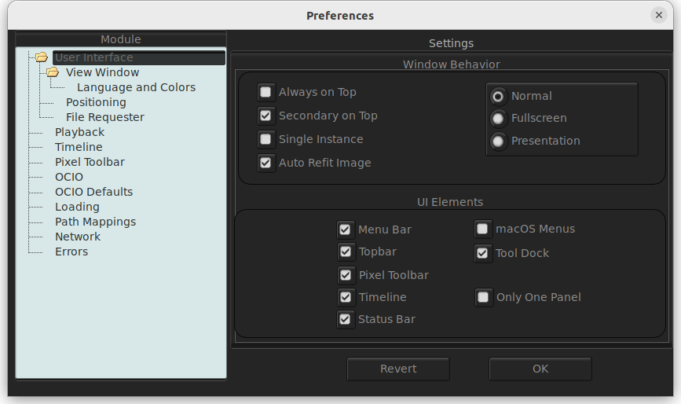

The mrv2 Interface

mrv2’s main window provides 6 different toolbars that can be hidden or shown.
The first toolbar is the menu toolbar. It can be toggled with Shift + F1. The menus are also available from the Right Mouse Button on the View window. The menu toolbar also has the Edit button to toggle the editing mode and the Fit Window to image button.
The second toolbar is the main layer, exposure, OCIO and gamma controls. It can be toggled with F1.
The third toolbar is the Timeline Viewport and controls. You can toggle it with F3.
The fourth toolbar is the Pixel Toolbar, which shows the current pixel under the cursor. You can toggle it with F2.
Finally, the last toolbar is the Status toolbar. It will print out errors and let you know in what action mode you are in (Default is Scrubbing).
Customising the Interface
mrv2 can be customized to show any of the toolbars and set up how the main window behaves from Window->Preferences->User Interface. These settings are saved when you exit mrv2 and will allow you to always start mrv2 in a certain configuration.
The Timeline
The Timeline Viewport allows you to scale the Editing’s Thumbnails and Audio waveforms by dragging the viewport up and down. For a quick display of all the tracks, you can click on the Edit button in the Menu toolbar. When showing the pictures, you can zoom in and out with the mousewheel.
Hiding/Showing UI elements
Some useful (default) shortcuts are as follows
Shortcut |
Action |
|---|---|
Shift + F1 |
Toggle Menu Toolbar. |
F1 |
Toggle Topbar. |
F2 |
Toggle Pixel Toolbar. |
F3 |
Toggle Timeline Viewport and controls. |
F11 |
Toggle Fullscreen mode. |
F12 |
Toggle Presentation mode (no toolbars, fullscreen). |
Mouse interaction in the Viewer
A three buttoned mouse can be used for closer image inspection. Hold the middle button and drag to pan the image within the viewport. Hold down the Alt key on your keyboard and drag left/right with the right mouse button to perform a centred zoom in/out on the image. You can also use the mousewheel which is more confortable.
Note
To ‘reset’ the viewer so that the image is auto-fitted, you can select “Fit” from the Zoom display pulldown in the Pixel Toolbar or use the ‘f’ hotkey. To ‘center’ the view, without changing the zoom factor, you can use the ‘c’ hotkey.
Timeline
Frame Indicator
- Immediately to the left of the timeline is the ‘current frame’ indicator. Click on this to get a list of options as to how the current time is displayed:
Frames: absolute frame, i.e. the first frame of the media is always frame 1.
Seconds: the playhead position from the start of the media in seconds
Timecode: the 8 digit timecode. If the media has timecode metadata this will be used
Transport Controls
These are pretty universal and don’t need much explanation. There’s a play/pause button, step forwards/backwards buttons and fast forard/fast rewind buttons.
FPS
The frames-per-second (FPS) indicator showing the desired FPS. The FPS button is a popup that allows you to quickly switch to a new frame rate.
Start and End Frame Indicator
To the right of the timeline, the Start frame and End Frame indicators are shown. The S and E buttons can be clicked to set the In and Out points at the current frame. It is equivalent to pressing the ‘I’ or ‘O’ hotkeys.
Player/Viewer Controls
- Two buttons to the bottom of the timeline viewport provide the following interactions
Volume/mute control: click once to get a pop-up volume control. Double click to toggle muting of audio.
Loop mode: set whether the playhead will loop a source in playback, play it once and stop on the final frame or ‘ping-pong’ loop.
The Panels
mrv2 supports Panels to organize the information logically. These panels can be docked to the right of the main viewport or can be made floating windows if dragged from their main drag bar.
Divider
The Panels have a divided, just like the Timeline Viewport, and can be dragged to make the panel bigger or smaller (and change the size of the main viewport).
Files Panel
The Files Panel (F4 by default) show all elements loaded. It has seven buttons at the bottom to Add a new File, Load a new File with Audio, Close the currently selected file, Close All the selected files, switch to the Previous or to the Next media file and filter Temporary EDL Playlists from the Files Panel.
Color Panel
The Color Panel allows controlling the color display of the viewport. It allows you to control the Add, Contrast, Saturation and Tint. You can Invert the image and set the In/Out Levels and gamma. You can also add a LUT.
Media Information Panel
The Media Information Panel is the work horse for displaying all data about the selected media. It shows all layers, codecs, levels, frame ranges, etc.
Compare Panel
The Compare Panel is similar to the Files Panel, but allows selecting multiple clips for comparison. You can show the A (Files Panel) image, the B (Compare Panel) image, Wipe, Overlay (using an alpha channel if present), Difference, Horizontal, Vertical and Tile. The Tile comparison allows multiple images to be tiled.